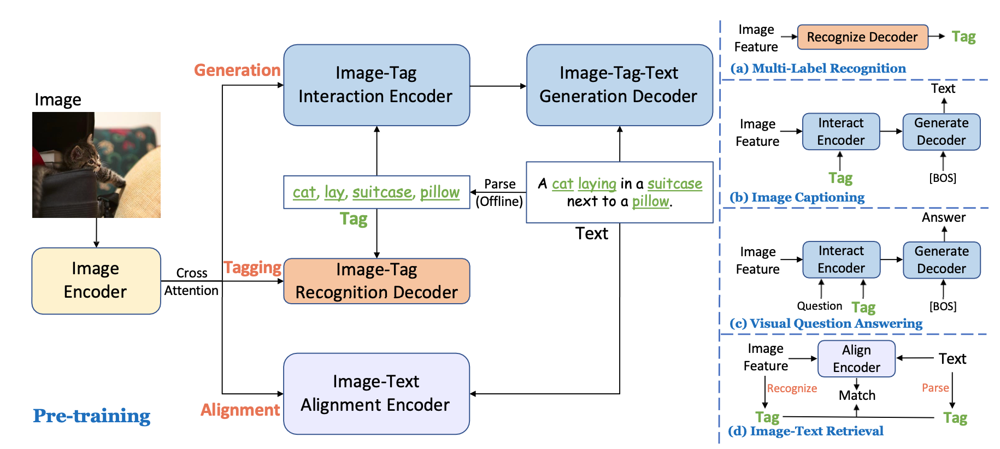
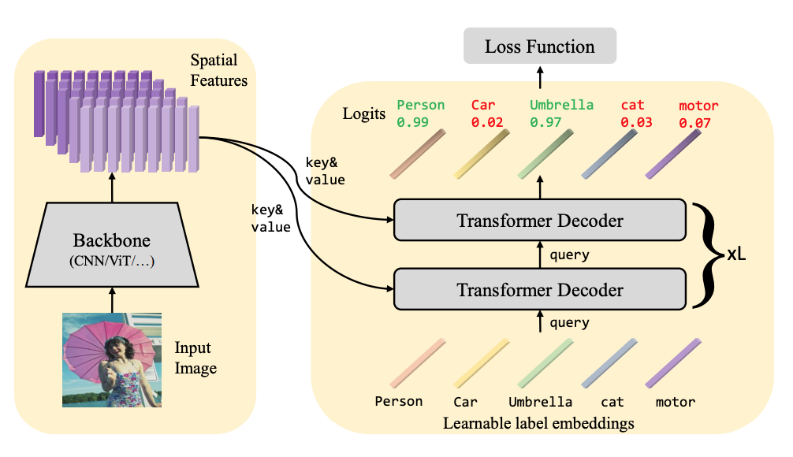
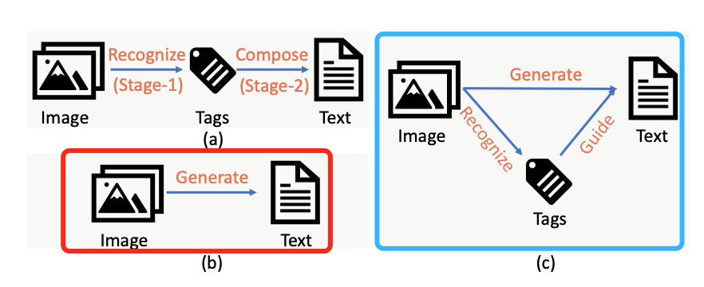
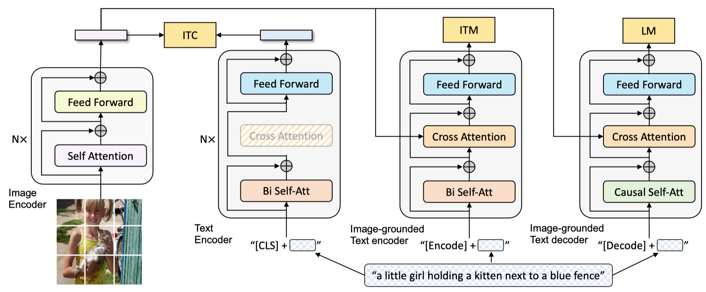
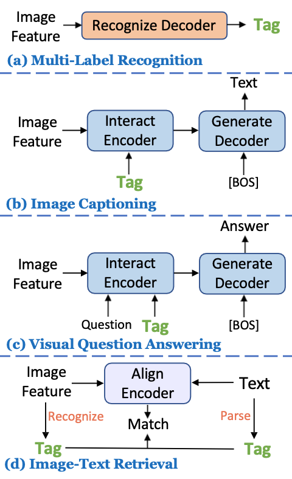
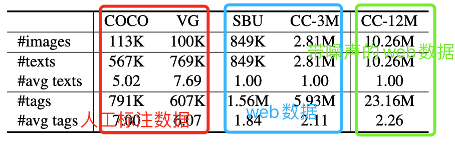

Tag2Text¶
- Paper:《Tag2Text: Guiding Vision-Language Model via Image Tagging》
0. Abstract¶
- tag2text:将图片打标签引入到VLP模型中，以指导模型可以学习视觉-语言（visual-linguistic）特征表示；
- prior works：人工标注tags，或者，通过一个受限的探测器去探测tags；
- generation-based task and alignment-based tasks；
1. Introduction¶
- 随着大规模图文image-text对的数据获得变得更方便，近期的大多数工作主要聚焦于大规模数据中，利用transformer-based方法去解决对比学习或者生成式学习；
- Prior approaches introduce the use of object tags as anchor points to ease(减轻、放松) the learning of semantic alignments between images and texts. these approaches rely on obsolete（退化的） detector-based VLP frameworks, which employ off-the-shelf object detectors to extract image features.Prior approaches遵循的是基于检测器的范式。通过使用目标 tags 作为锚点来简化图片和文本之间的语义对。这些方法通过一个检测器来提取图片特征，并送进多模态交互模块中进行学习。这种情况下检测器参数都是冻住的（如果梯度优化检测性能就会骤降），所以检测器不能优化，导致检测器性能会制约视觉-语言特征的学习。
- Prior approaches limitation：利用VLP（vision language pretrain）去实现目标检测能力，必须frozen detector-based models，因此就限制了vision language 模型的能力。这样使得加大大量昂贵的标注数据变的不够有效。另外导致模型的参数量增加，且推理运行计算时长也增加了。
- 对视觉语言模型（Vision-Language Models）引入图片标记（images tagging）任务来指导模型学习更好的视觉-语言特征。图片标记，类似于给一个图片打个多个与图片有关的label，有点像多label分类。
- two crucial perspectives：
- Data数据问题：引入了图片标记（image tagging）就需要构造图片中的tags 作为 label 用于训练。因为 image-text-pair数据很丰富，所以作者对image-text-pair进行自动化文本语义解析，从而从text中获取图片的tags。这样，图像tags能提供了图像和文本之间更好的桥梁，因为解析的标记类别更加多样化，同时比目标检测的object更丰富，有例如场景、属性、动作等。
- Architecture：在original image encoder后面增加了recognition head，促使模型可以end-to-end高效预训练，更少的参数，更好性能提升。
- Object detector 与 Image tagging对比：

- generation-based task：将训练任务变成image-tag-text生成任务。
- alignment-based task：将标签和生成的text对齐。
2. Related Work¶
- Image Tagging：一种多标签学习，是一种基础视觉任务。
- 近期的研究表明，transformer-based的可以更好引入视觉特征，且健全的损失函数可以解决样本缺失和样本不平衡的问题。
- 目前大多数的多标签学习样本都是基于人工标注样本，且劳动力敏感型且很难加大数据量的规模。
- 本文的方案可以从文本语义特征解析出并高效获得image tags和构建大规模的image tag的数据集，包含3429个常规类目，从而获得了更加高级的tag识别能力。
3. Approach¶
3.1 Overview Framework¶
- 总体框架图： 
- 核心关键在于如何从大规模image-textpairs中，利用图片的text挖掘image tags；
3.2 Mining Tags from Texts¶
-
Text Semantic Parser：image-text对的text-->image tags；
- 利用dependency tree句子依存关系树挖掘出entities (= head + modifier)和relationships；
- tags={objects，scenes，attributes，actions}
- head-->object/scene
- modifier-->attribute
- relationship-->action
-
Tag Category System Construction：原则=tags越是频繁出现，那么它越重要。
- Text Sematic parser-->4 million(4百万)-->按照频率过滤-->5000个最频繁出现的tags-->人工过滤和reveiw-->3429个常规类目tags。
- 个人观点：有点人工，主观性强。
3.3 Tag2Text Pre-training¶
- 多任务的预训练模型：Tagging，Generation，Alignment。
- Image Tagging：参考了论文《Query2Label-A Simple Transformer Way to Multi-Label Classification》Query2Label中的多label分类transformer decoder（用法如下图），同时为了避免解析的tags中有某些对应图片tag的缺失、正负样本的不平衡，使用了Asymmetirc Loss（ASL）。
- Image-Tag-Text Generation：参考了标准的transformer的encoder-decoder框架，tags与text都经过 tokenizer+embeding matrix 映射为embeding，然后 tags embeding（image tags随机乱序重新排序，防止顺序影响学习）与 image embedding(features）一起送入encoder，再经过decoder解码。输出与text embedding进行loss计算，采用单向语言模型的Loss，以自回归的方式拟合文本最大似然估计。
- 主体思想：相当于用tag指导image生成text；这种方式的好处是产生的文本更加便于理解和强可控性。
- 示意方式如下图所示，前人的想法要么是（a）要么是（b），但是本文的思想是（c） 
- 个人看法，我觉得（b）方法可能会成为未来的主流技术方案，一步到位生成结果。
- Image-Text Alignment：判断image和text是否对齐。在框架中，通过额外引入一个image-text alignment encoder来实现对齐。用粗粒度的 Image-Text Contrastive(ITC) Loss 和 细粒度的 Image-Text Matching(ITM) Loss 分别进行学习，这里参考了BLIP的技术方案。且在ITC阶段获得更高similarity的负样本会被更大概率被选择进入ITM阶段，目标去处理更加难的部分。 
3.4 Tag-Guided V+L Tasks¶
- 从标题就可以看出，利用tags去指导并提升各种vision+language任务，如下图各类任务所示的处理办法。
- Multi-Label Recognition任务
- Image Captioning任务
- Visual Question Answering任务
- Image-Text Retrieval任务

4. Experiment¶
- 预训练数据组成：4M（人工标注数据+web数据）+14M（人工标注数据+web数据+带噪声的web数据）
- The models are pre-trained for 20 epochs with the batch size of 960 on 8 NVIDIA A100 GPUs。
- The input images are resized to 224 × 224 uniformly during the pre-training stage.